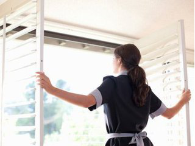
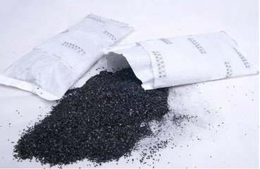

祛除甲醛最好的方式就是不让甲醛进来
近年来，随着媒体报道装修污染造成健康出现问题的案例逐年增加，甲醛污染越来越被人们所重视，网上关于去除甲醛的方法也是五花八门，甚至有一些“不靠谱”却被广泛流传的方法，今天小编就和大家一起盘点一下那些年我们听过、用过的除醛方法。
看似有效 作用有限的方法,许多人都相信植物能除甲醛，比如在家里摆放吊兰，柚子，茶叶根等植物。事实证明，植物的呼吸能力相当有限，通常是微克(百万分之一克)甲醛级别。如房间内甲醛超标，需要摆放数千盆植物，持续光照才能起一定效果。
还有一部分人相信民间偏方，认为白醋可以消毒，去除甲醛。 然而专家指出，食醋属于酸性物质，有微弱中和空气中氨气的作用，但不会和甲醛发生反应，故而这种方法除甲醛并不可取。另外香水，空气净化剂等只能起到遮盖作用，无法起到消除作用。
有一定效果 但不完美的方法,开窗通风，省力又省钱，大多数的家庭都认同这种方法，特别是夏天开窗，很有效。但有一点需要强调，甲醛是一种极难挥发的气体，在室内停留时间可长达3-15年,只靠通风难以全部消除。

竹炭对甲醛有很强的吸附能力。但是最新的试验结果表明，活性炭对于甲醛的吸附并不稳定，甚至还不如跟水分子结合得紧密。如果室内空气湿度大，吸附的水分子会比甲醛还多，甚至可能把之前吸附在竹炭上的甲醛给挤下来。另外活性炭吸附容易饱和失去吸附作用，需要定期及时更换。

最有效 最彻底的方法，“釜底抽薪，斩草除根”。最有效，最彻底的方法就是从源头上杜绝甲醛。为此，要求消费者们在家装时要格外注意选材，尽可能的采用钢制材料，选着实木家具，无胶地板，水性壁纸等环保材料。网上之所以有这么多除甲醛方法流行，还是因为消费者深受其害久，矣，畏之深矣!也只有将甲醛拒之门外，家人才能住的高枕无忧。